01
Arena
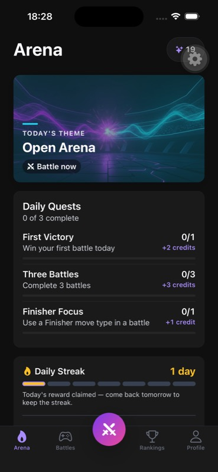
The daily-themed hero opens general matchmaking. The raised sword action has no visible label.
A native walkthrough, a complete bot series, source review, and accessibility probes. These 33 screenshots show where the current interaction and art direction succeed—and where they break down.
Keep dark neutral surfaces, expressive fighters, and cinematic payoffs. Standardize fighter identity and crops, improve contrast and typography, and let writing and the next action dominate functional screens.
The focused text is offscreen. Changing a move also erases the draft. See screens 11–14.
Large text pushes reporting actions and the Practice option offscreen. See screens 20–21 and 32.
Pack text and badges collide. “Best value” disagrees with displayed unit prices; subscription promises need implementation checks.
Select a category to compare related screens. Open any image at its full exported size. Code-only mechanics findings and proposed changes are in the full audit.
Showing 33 screenshots

The daily-themed hero opens general matchmaking. The raised sword action has no visible label.
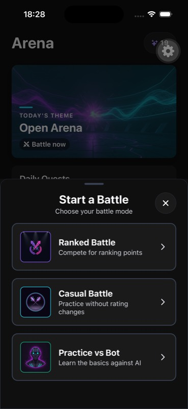
Three clear choices at default text size; compare the enlarged-text failure in screen 32.
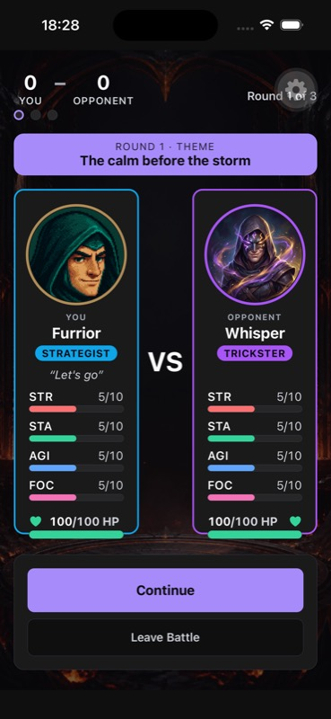
Strong versus framing. Keep the practice/AI identity visible through this stage.
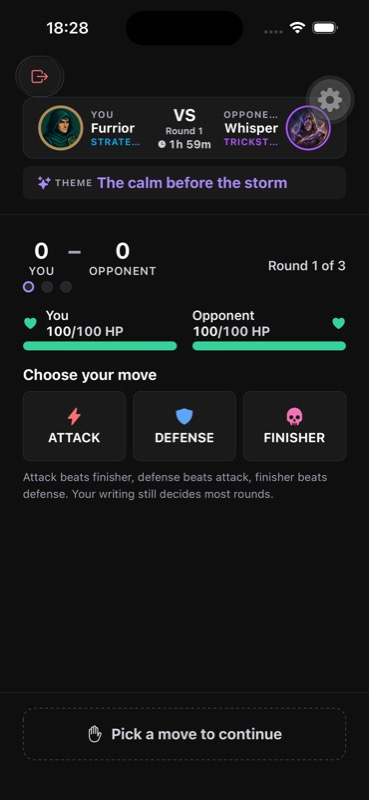
Move relationships are visible, but the compressed header truncates context at default size.
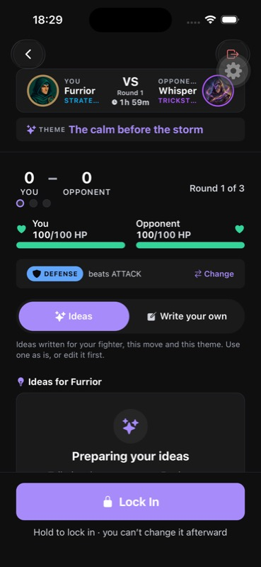
Loading occupies the writing surface. The core action needs an unambiguous ready/disabled state.
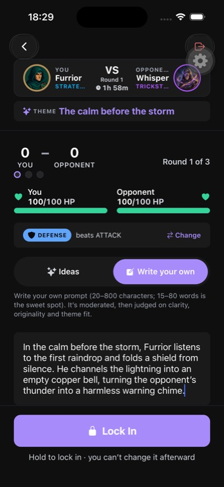
Custom writing works with the hardware-keyboard setup. This is not the software-keyboard test.
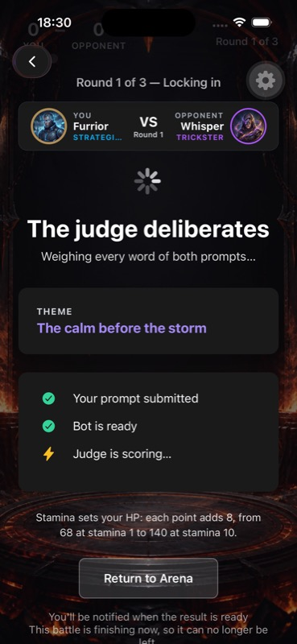
The score reaches the status-bar area. Consolidate repeated battle state into one safe-area-aware HUD.
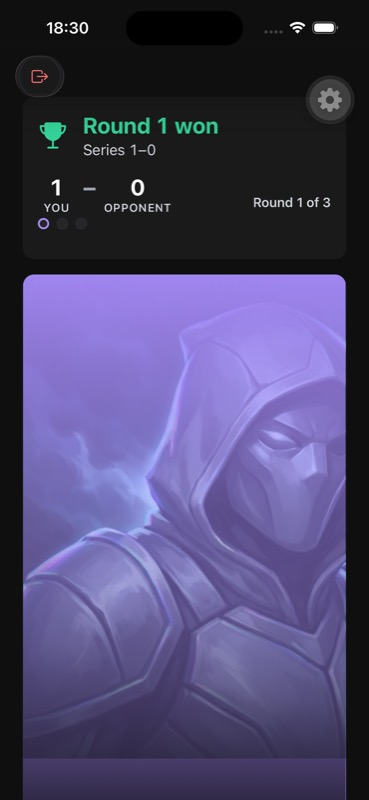
The tall, heavily tinted portrait dominates the page; Continue is below the fold.
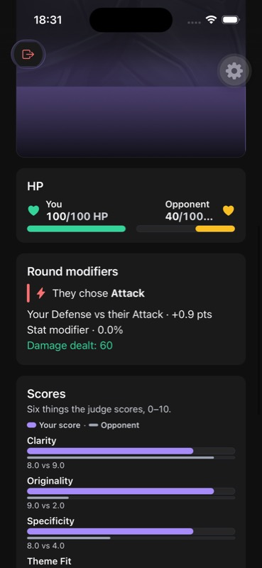
Useful HP and rubric evidence appears after scrolling. The opponent HP label is truncated.
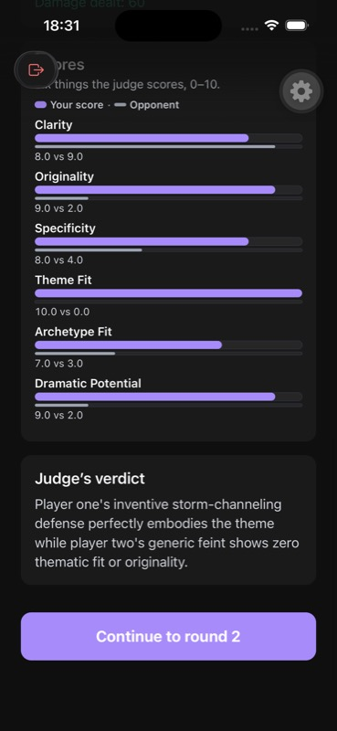
Two upward swipes from the top were needed to reveal Continue. Judge prose exposes internal naming.
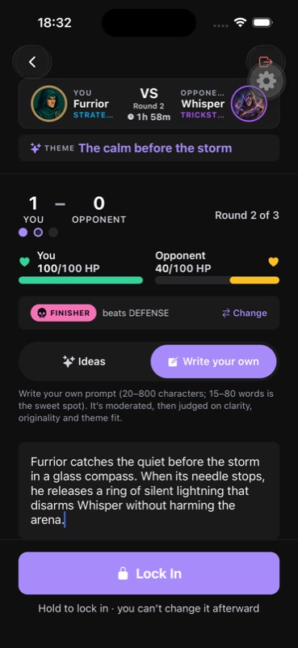
Round-two custom prompt: 172 characters. This is the input players expect to survive a reversible choice.
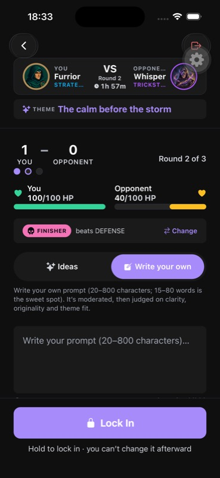
Change move → Continue → Write your own returned to an empty 0/800 editor.
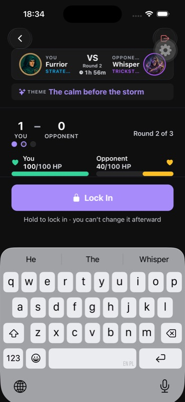
The focused authored text is out of view. Repeated HUD content occupies the reduced viewport.
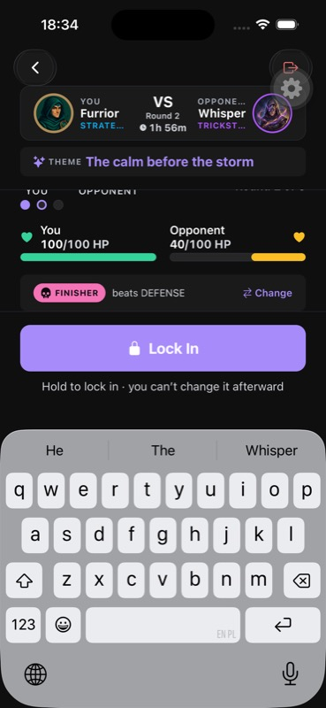
The first upward scroll still did not expose the editor. Prioritize caret visibility and writing space.
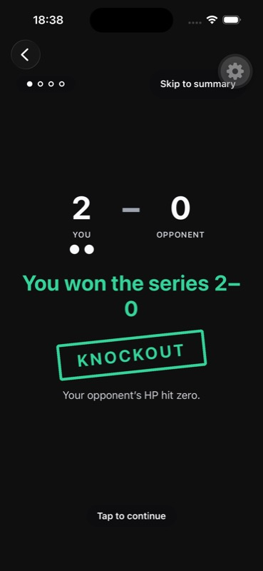
The 2–0 knockout explanation is clear. Consolidate repeated verdict gates before and after this moment.
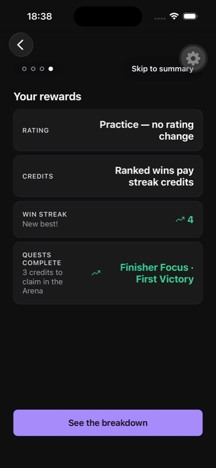
The reward beat has a reachable action and dark ink on lavender. Keep these strengths.
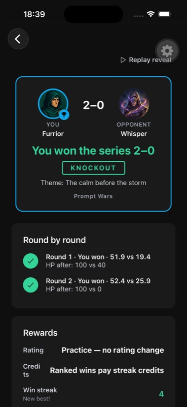
Round history is useful. Reward labels split midword even at the default text size.
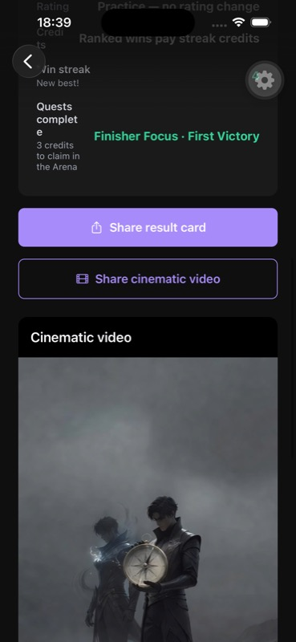
Sharing and optional cinematic occupy another long section before the next-battle action.
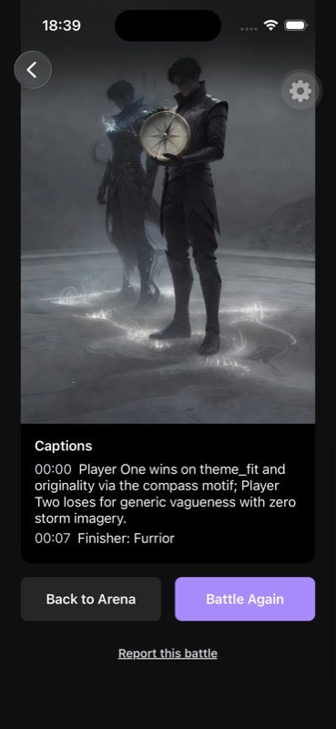
Battle Again and Arena appear after the cinematic and captions. Keep the replay action reachable.
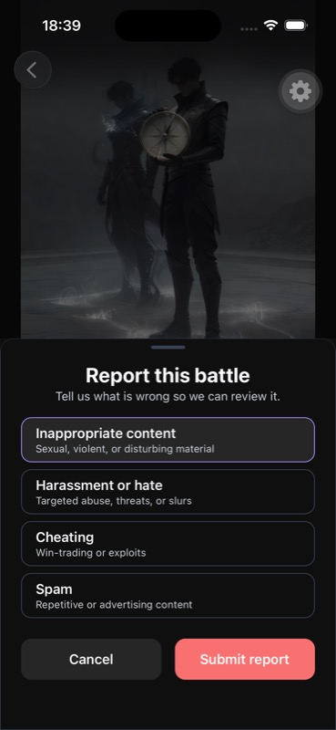
The normal-size safety sheet fits. No report was submitted in this audit.
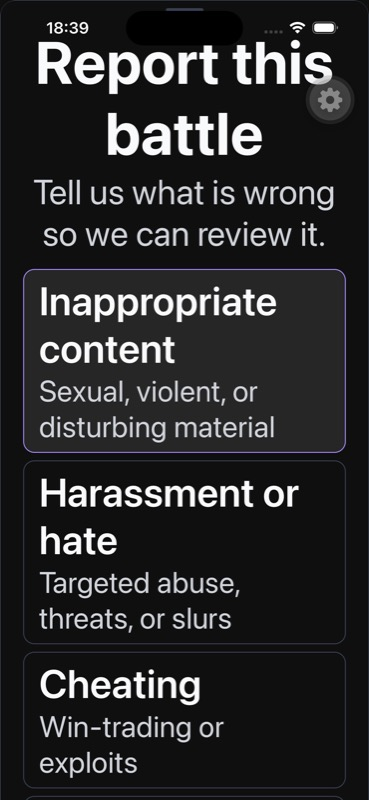
Lower reasons and Cancel/Submit are offscreen, with no scrolling sheet body.
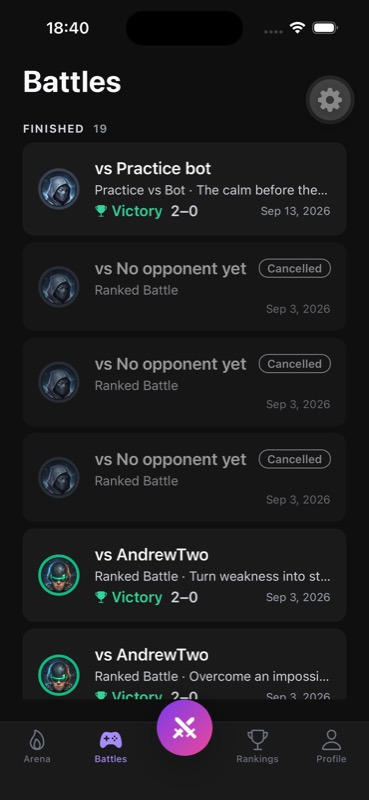
Clear victory labeling and history rows. Canceled queues take substantial space; full history needs pagination.
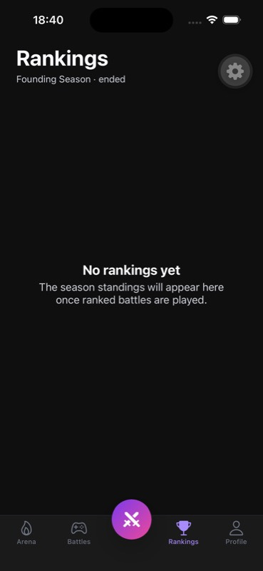
An ended season uses generic empty-active copy. Explain the current season state and next opportunity.
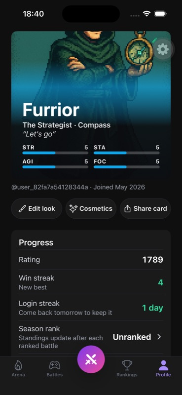
Fighter identity is compelling, but the portrait crops off the top of the face. Compare Shop/editor.
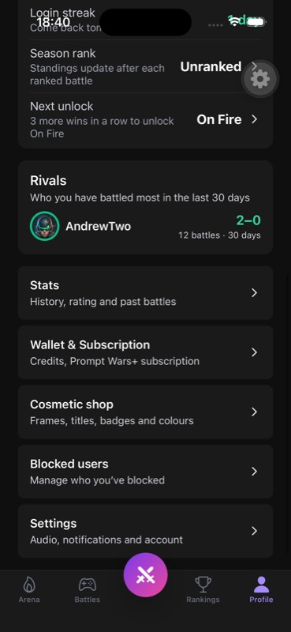
The utility hierarchy is sensible. Returning from its grouped subpages reset the selected tab to Arena.
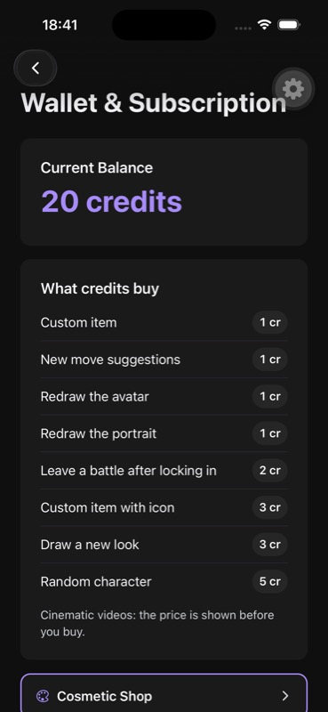
Credit costs are explicit. The paid leave-battle rule needs a product decision about free parking/forfeit.
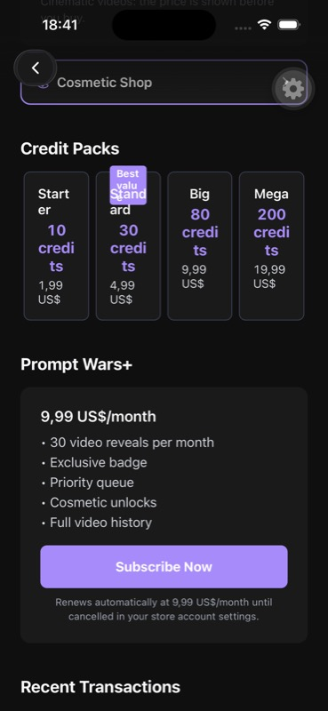
Four narrow cards break words and collide with the badge. Standard is not the lowest displayed unit price.
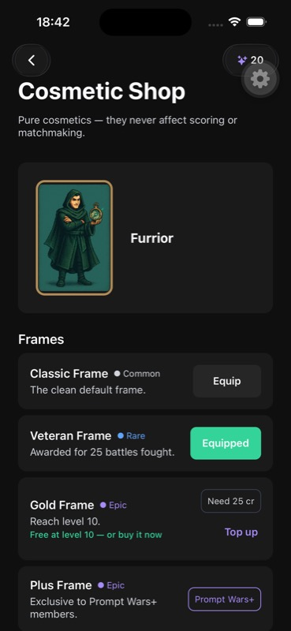
Preview on the actual fighter and earned alternatives are strengths. Validate independent Buy/Equip accessibility.
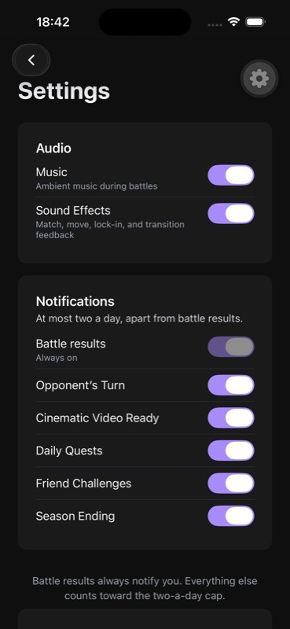
Audio and notification groups are clear. Back returned to Arena instead of the Profile opener.
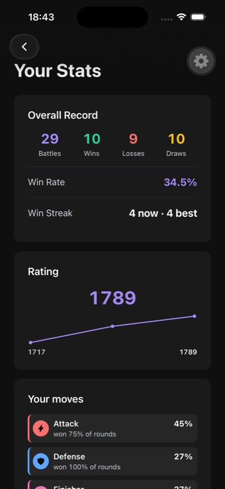
Readable overall record and move insights. Make the data window clear for sampled analysis.
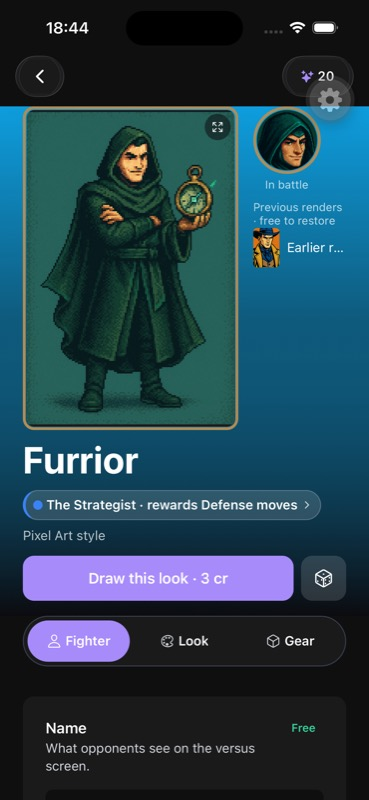
The full fighter is recognizable here. Preserve the face and item across other crops and battle surfaces.
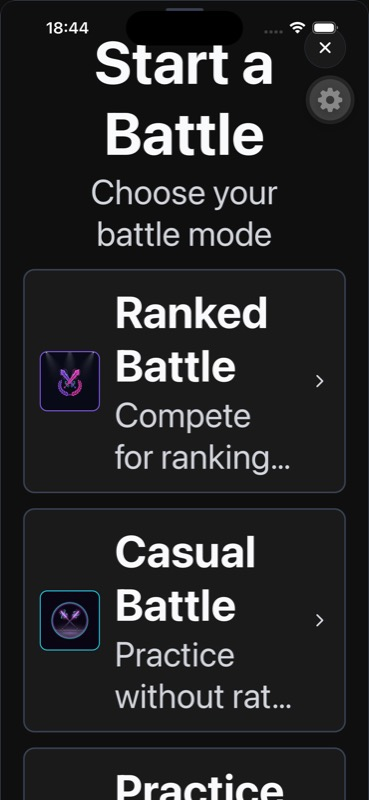
Practice falls below the screen; descriptions truncate. Give the sheet a scrollable, inset-aware body.
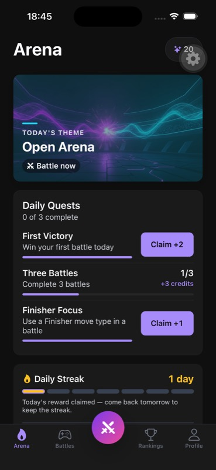
Two achieved quests have Claim actions, but the header says 0 of 3 complete. Separate completion from claiming.